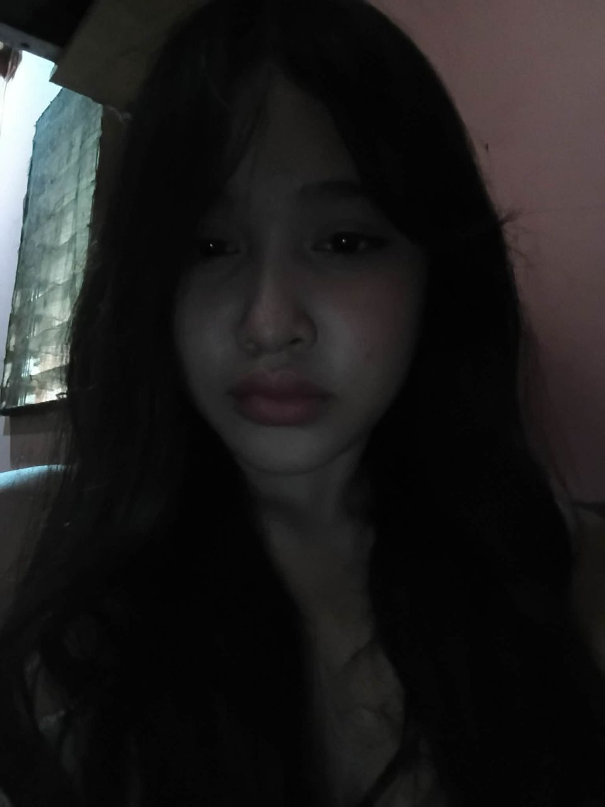

I am Juliana Wenzel Ombayan, but I want to be called by my nickname, Liana or maybe Yana.
I was born on May 21, 2008. I grew up in the province with my grandparents, but later I transferred to Sunrise Village, Pardo, Cebu City.
I am 17 years old and currently studying at Asian College of Technology, taking the STEM strand.
I consider myself a friendly individual who gets along well with other people, and I don't leave anyone behind when I'm with them.
My hobbies are watching J-dramas, C-dramas, and series from other countries. I also like playing MLBB and eating my favorite snacks.
I'm also a big BL fan! I really love watching BL series, and even when the actors are just co-workers in the show, I enjoy their chemistry so much. They also show support for the LGBTQ+ community and are proud of who they are. They give us the message, "No matter what people think, don't stop being yourself and love yourself." It's fun to see their interactions and how the story unfolds, and I always get excited waiting for the next episode.
Strength
I am emotionally aware, which means I understand my own feelings and can also sense how others feel.
Value
I value myself, my worth and always strive to be true to who I am.
Career Goal
• I want to pursue a career in nursing because I want to help people, not just my family. I also hope to improve my communication skills and boost my confidence while learning to care for others.
Personal Goal
• As I grow as a person, I want to build my confidence, develop my strengths, and improve my self-discipline so I can face challenges and reach my dreams.
Future Goal
• Someday, I want to be the first and last nurse in my family, paving the way with dedication, compassion, and the courage to follow my dreams.
Skill Goal
• I plan to improve my confidence as I grow.
"The best way to find yourself is to lose yourself in the service of others."
I believe that helping others is one of the most meaningful things a person can do.